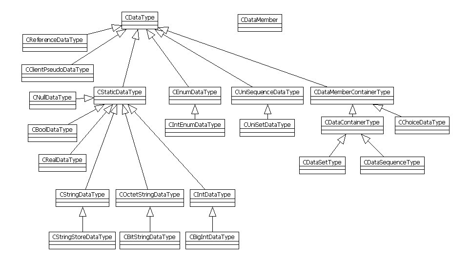

Warning: This HTML page is deprecated
All new changes are being made to the Toolkit Book
at the following locations:
The Development Version is the most recent documentation before it becomes an Official Release. While the Development Version is the lastest version, it is accessible only from inside NCBI, and the search engine functionality is currently missing. Also, the location of the Development Version may change without warning! So it is suggested that you use the Official Release, and use the Development Version only when necessary.
DATATOOL
code generation and data serialization utility
Class diagrams
Specification analysis
ASN.1 specification analysis

DTD specification analysis

Data types

Data values

Type strings

Code generation